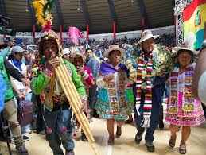
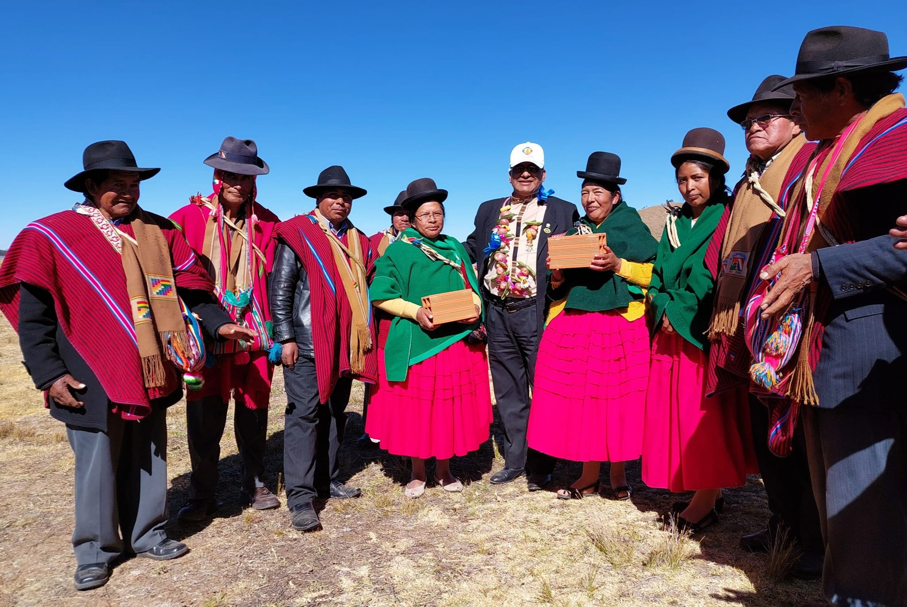
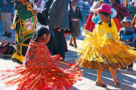

Tiquina, ubicada a orillas del Lago Titicaca, ha sido un importante centro de comercio y comunicación desde tiempos precolombinos. Su nombre proviene de la lengua aymara y significa "estrecho". La región ha sido habitada por comunidades aymaras que han desarrollado una rica cultura ligada al lago, el cual es considerado sagrado. Durante la época colonial, Tiquina se convirtió en un punto estratégico para el intercambio de productos entre diferentes regiones. Hoy en día, sigue siendo un lugar clave para la pesca y el turismo, siendo famoso por su puerto y la festividad de la Virgen de la Candelaria.
La región de Tiquina, ubicada en el departamento de La Paz, Bolivia, es una tierra rica en tradiciones y prácticas culturales ancestrales. Situada en la provincia de Manco Kapac y dividida por el estrecho que lleva su nombre, Tiquina conecta las dos secciones del Lago Titicaca: el Lago Mayor y el Lago Menor (Wiñaymarka).
La cultura de Tiquina es mayormente aymara y refleja una fusión entre las creencias indígenas y la religión católica, heredada de la época colonial.Tiene como festividades la fiesta de la Virgen de Copacabana, patrona de Bolivia, combinan la devoción cristiana con rituales tradicionales. Además, se llevan a cabo ofrendas a la Pachamama (Madre Tierra) para agradecer y pedir bendiciones para la agricultura y la pesca, actividades fundamentales para la economía local.
Las expresiones artísticas de Tiquina son variadas y coloridas, destacándose las danzas tradicionales como la morenada, diablada y kullawada, Estas danzas son parte esencial de las festividades y reflejan la profunda identidad aymara de la región.
Aunque el español es el idioma más hablado , el aymara sigue siendo una lengua importante en Tiquina y se usa en la vida cotidiana, en ceremonias y rituales. Este vínculo lingüístico refuerza el sentido de comunidad y preserva las tradiciones transmitidas de generación en generación.

El Lago Titicaca es considerado sagrado y tiene un papel central en la vida de los habitantes de Tiquina. Las aguas del lago y las montañas circundantes son vistas con profundo respeto, y se cree que son fuente de vida y protección, lo que se refleja en las ofrendas y ceremonias dedicadas a la naturaleza.
La cultura de Tiquina se caracteriza por su profundo respeto hacia la naturaleza y sus raíces indígenas. Este equilibrio entre tradiciones ancestrales y creencias religiosas convierte a Tiquina en un lugar de riqueza cultural y espiritual, siendo un punto de conexión en el altiplano boliviano y un destino fascinante para quienes desean experimentar la esencia cultural de Bolivia.